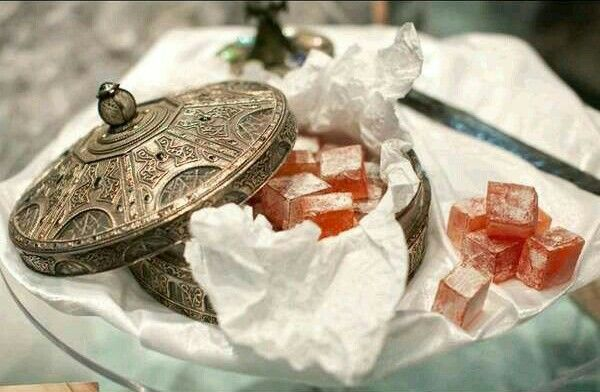

SI PUDIERAS PEDIR cualquier cosa de comer, absolutamente cualquier cosa, y hacerla aparecer de la nada… ¿qué
pediríais?
En Las crónicas de Narnia: el león, la bruja y el armario, Edmund Pevensie tiene que
responder a esta pregunta,
y se decide por nada más y nada menos que delicias turcas.
Yo elegi este postre este porque aparece en una de mis peliculas favoritas con mi personje favorito.

Ingredientes
400 g de azúcar
600 ml de agua
60 g de maizena
Aroma de naranja (o del sabor deseado)
Colorante alimentario (en mi caso usé rojo)
Azúcar glas (suficiente para rebozar las delicias)
Aceite (para untar el molde)
Pasos
En un cazo ponemos 400 g de azúcar y 200 ml de agua.
Calentamos a fuego medio, removiendo hasta que el azúcar se disuelva por completo.
Una vez disuelto, dejamos que el almíbar hierva con un burbujeo suave (sin remover) durante
aproximadamente 10 minutos.
En otro cazo distinto ponemos la maizena y vertemos poco a poco los 400 ml de agua restantes, removiendo
con unas varillas hasta que quede una mezcla homogénea
Calentamos la mezcla a fuego medio sin dejar de remover con las varillas. Espesará hasta convertirse en
una pasta pegajosa.
Llegados a este punto, incorporamos poco a poco el almíbar del otro cazo. Removemos sin parar para que
se incorpore bien.
Una vez que tenemos una mezcla homogénea llega la parte aburrida: hay que dejar que se cocine a fuego
bajo (manteniendo un burbujeo leve pero constante) durante una hora. Conviene remover de vez en cuando
para evitar que la pasta se pegue al fondo.
Al cabo de una hora, la mezcla parecerá una gelatina pegajosa y translúcida y comenzará a adquirir un
tono más amarillento que blanco. Entonces sabremos que está lista para añadir el aroma y el colorante.
En cuanto le hayamos dado color y sabor a la pasta, retiramos el cazo del fuego. A continuación cogemos
un molde cuadrado o rectangular (sirve un tupper o cualquier otro recipiente) y lo forramos por dentro
con film transparente untado en aceite
Una vez que el molde esté preparado, vaciamos la mezcla en su interior, asegurándonos de que la
superficie quede plana. La pasta debe tener un grosor de uno o dos dedos, aproximadamente.
Ponemos el molde con la pasta en la nevera y lo dejamos reposar unas cuantas horas, hasta que cuaje y
tenga consistencia de gelatina.
Desmoldamos la gelatina sobre un plato o una tabla de cortar previamente untados en aceite para evitar
que se pegue
Con un cuchillo untado en aceite, cortamos la gelatina primero en tiras y luego en dados.
Por último, rebozamos nuestros dados de gelatina en azúcar glas hasta que queden totalmente cubiertos
(¡y dejen de ser pegajosos!)
¡Y listo! Nuestras delicias turcas están a punto para ser degustadas.
Esta receta fue copiada de la página
https://esquinasdobladas.com/index.php/2017/12/27/delicias-turcas-narnia/